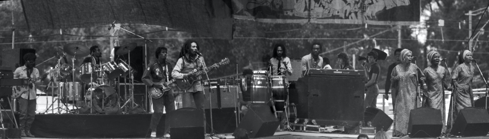

Fotografia: Bill Fair - site: unsplash
Robert Nesta Marley
Bob Marley se chamava Robert Nesta Marley e nasceu em 1945 no vilarejo de Nine Mile na Jamaica, um local afastado da capital Kingston para onde se mudou aos 12 anos de idade com a sua mãe. Na capital (Kingston) Bob e sua mãe foram morar em Trench Town, um bairro muito pobre e violênto que o cantor fez questão de dedicar uma música para retratar a opressão, violência e pobreza do local. Ele faleceu precocemente em 1981, vítima de um câncer que não foi devidamente tratado porque o próprio cantor não se submeteu ao tratamento correto, pois na religião Rastafári acredita-se que o nosso corpo é um templo que não deve ser modificado.
Quando surgiu a música
3-12-1976, Bob Marley & The Wailers participariam de um festival chamado Smile Jamaica, o festival estava sendo promovido pelo primeiro ministro Michael Manley para pregar a paz contra a guerra entre facções rivais que aterrorizavam a Jamaica com muita violência e mortes. Dois dias antes do envento, Bob e sua banda sofreram um atentado enquanto ensaivam para o evento, homens encapusados invadiram o ensaio atirando e Bob foi atingido no braço e no peito um pouco abaixo do coração. Mesmo assim Bob Marley e The Wailers participaram do evento, porém, na sequência ele se muda para Londres - Inglaterra e inicia a crição do seu album mais político "Exodus" que foi lançado em 3 de junho de 1977, sendo que a primeira música é justamente Natural Mystic.
"As pessoas que estão tentando piorar este mundo não tiram um dia de folga. Como é que eu vou tirar? Foi isso que Bob Marley respondeu quando o perguntaram como ele conseguiu fazer o show após dois do atentado.

Fotografia: Stevepb - pixabay
Bob Marley e The Wailers
Bob e os The Wailers
1962 - 1974
A banda The Wailers foi fundada em 1962 tendo o seu termino em 1974 após um desentendimento entre seus membros, incluindo Bob Marley. Na ocasião, os três músicos principais (Bob Marley, Bunny Wailer e Peter Tosh) decidiram seguir carreira solo.
1974 - 1981
Após ocorrer a divisão do grupo, Bob Marley formou, a partir dos membros remanescentes do The Wailers, a banda que o acompanharia, mas promoveu grandes mudanças sendo a mais importante modificação a adição de um coro de três vocalistas de apoio Rita Marley, Judy Mowatt e Marcia Griffiths, elas foram batizadas de I Threes.
O primeiro algum da banda foi Natty Dread, que foi lançado ainda no ano de 1974 cotendo um dos maiores sucessos de Bob e sua banda a música "No woman cry" que é um sucesso até hoje.
O último album lançado enquanto Bob Marley estava vivo foi "Uprising" em 1980 (um antes de sua morte).